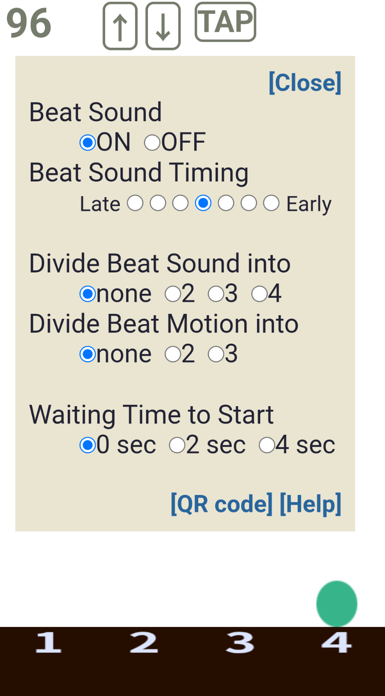

更新日：2025/08/29
Auftakt5（汎用ブラウザ版）
「Auftakt5」は、ブラウザ上で動作するメトロノームアプリです。事前のインストールは不要で、
以下をクリックすることで、すぐに使うことができます。（ユーザー登録なし。もちろん無料）
特徴
- 汎用ブラウザで動作するため、事前のインストールが不要。パソコン、スマートフォン、タブレットなど多くの機種で利用可能
- 指揮棒の動きの基礎ともいえる放物運動（自然落下運動）が表示されるため、（特にゆっくりしたテンポで）テンポの把握がしやすい
- ゆっくりしたテンポでの分割は、音と放物運動（分割音と分割振り）を独立して設定可能。実質的に、2拍3連などの提示が可能
- メトロノーム動作開始までの待ち時間の設定が可能。アウフタクト（アップビート、上げ拍、しゃくり）を見てテンポを把握する練習が可能
- 現在の設定値を含んだURLとQRコードの表示により、設定値の記録や共有が可能
- 多様な変拍子やリズムの設定が可能（2025.8.29～クリックサウンドスクリプト機能追加）
基本的な使い方（ノーマルモード）
- 画面中央部をタップするたびに、開始・停止します。
- 拍子は、画面下部の数字表示部分をタップすることで、1拍子〜6拍子までを順番に変更できます。
- テンポは、以下のいずれかの方法で変更できます。
- 画面中央部を上下にスワイプ（ドラッグ）します。
- 画面左上のテンポの数字をタップして、リストから選択します。
- [↑][↓]をタップします。テンポは１ずつ上下します。
- [TAP]を目的のテンポで数回タップします。
- 画面中央部を長押しすると「設定画面」が開き以下の設定ができます。
- メトロノーム音（Beat Sound）のON/OFF
- メトロノーム音のタイミング調整（後述）
分割振り（2分割、3分割）の設定

注意（スマートフォン、タブレットをお使いの場合）
- Bluetoothイヤホンなどを使うと、メトロノーム音(Beat Sound)が、拍点より遅れて聞こえることがあります。
その時は、画面を長押しして設定画面を開き、クリック音のタイミング(Beat Sound Timing)を調節してください。
- スマートフォンの省エネ設定をしていても、メトロノーム使用中は画面を暗くしたりオフにすることはしません（Screen Wake Lock）。
他のアプリや画面に切り替えると、省エネ設定が有効になり、
メトロノームの画面に戻ると、再度Screen Wake Lock状態になります。
- 上記Screen Wake Lockを自動的にON/OFFする機能は、使用するブラウザの種類やバージョンによって必ずしも確実に機能するとは限りません。
便利な使い方
- メトロノームの実行画面を、スマートフォンの「ホーム画面に追加」機能を使って、ホーム画面にアイコンを置いてみましょう。
次回からそのアイコンを開くだけで使うことができるようになります。
- パソコンの場合、ブラウザの「☆お気に入り」に入れておくとよいでしょう。
- 起動時および設定画面で[Help]をタップすると簡単なヘルプ（英文）が表示されます。
- URLに拍子・テンポの設定を含めることができます。このようなURLを使うと、
あらかじめ設定された拍子・テンポなどで即座にメトロノームを使うことができます。詳しくは以下の「URLで拍子・テンポなどを指定する方法」
を参照してください。
- 「設定画面」の下の[Share]をクリックすると、
その時の設定値を反映したURLとQRコードを表示することができます。
他のメモアプリなどにコピー＆貼り付けなどして利用してください。
(スマートフォンではQRコードのコピーはできません。)
URLで拍子・テンポなどを指定する方法
2025.6追加
2025年5月より、Auftakt5のURL(*)の末尾に拍子とテンポを指定することができるようになりました。
このような形式のURLにアクセスすると、あらかじめ指定された拍子・テンポですぐに動作させることができます。
この仕組みを使うと、自分なりの設定値のリストを作ったり、練習に有効な設定をメンバー間で共有したり、
あるいはQRコードを印刷して楽譜と一緒に持ち歩いたりということが可能になります。
(*)https://actbemu.github.io/auftakt/auftakt5.html
指定の仕方
アウフタクト５URLの末尾に「?」を付け、その後に拍子とテンポを以下のように記述します。
拍子は、bt=◯というように、◯のところに拍子の数字（整数1〜6：半角文字）を記述します。
テンポは、mm=◯というように、◯のところにテンポ（メトロノームテンポ）(整数20〜208：半角文字)を記述します。
btとmmの順序は任意ですが、「＆」記号で区切って並べます。
なおbtは省略可能で、省略した場合は4拍子に設定されます。
例
3拍子、テンポM.M.＝96
https://actbemu.github.io/auftakt/auftakt5.html?bt=3&mm=96"
4拍子、テンポM.M.＝48
https://actbemu.github.io/auftakt/auftakt5.html?mm=48&bt=4
4拍子、テンポM.M.＝120(拍子指定を省略した例)
https://actbemu.github.io/auftakt/auftakt5.html?mm=120
その他
より詳しい説明や、アドバンストモードに関する情報は、適宜「note
」にて提供します。
● アウフタクトが見えるメトロノーム「Auftakt5」の動作モードについて
● メトロノーム「Auftakt5」に変拍子機能を追加～設定方法の考え方～
主な更新履歴（降順↓）
- 2025.8.29 クリックサウンドスクリプト機能追加
- 2025.7.31 マーカー線表示機能追加。設定画面の項目・用語を調整
- 2025.7.26 デュアルモード化。変拍子対応(アドバンストモード)
- 2025.6 パラメータ付きURLに対応
- 2025.6 スクリプトを全面的に見直し、より正確な動きとクリック音を実現(Ver.2)
前のページへ戻る